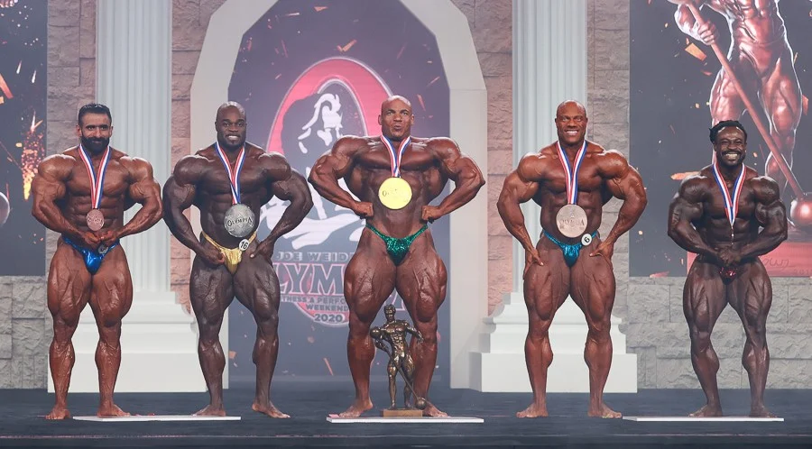
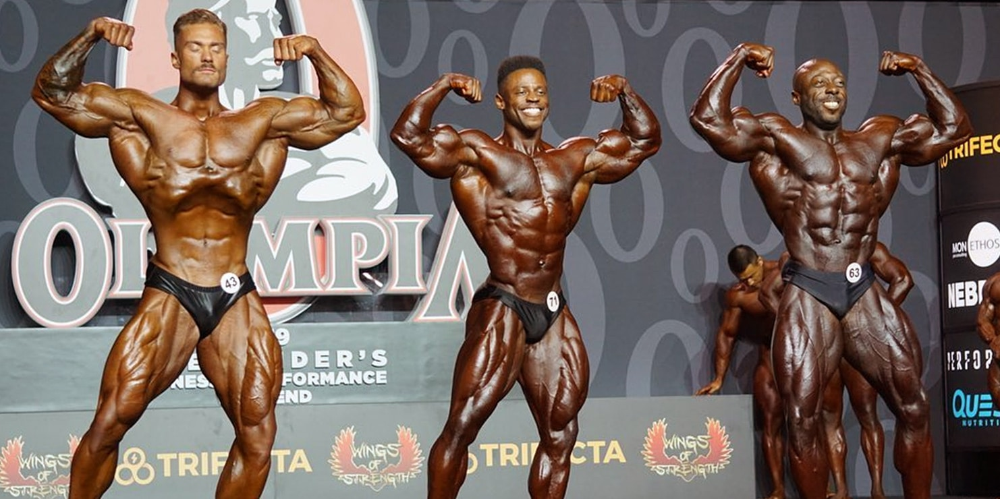

Mister Olympia
El Mister Olympia es la máxima competición de culturismo profesional, se celebra anualmente y alberga a los mejores culturistas de todo el mundo.
Fue creado en un principio por Joe Weider,y actualmente es organizado por la Federación Internacional de Fisicoculturismo (IFBB).
La primera competición de Mister Olympia se celebró el 18 de septiembre de 1965 y el vencedor fue Larry Scott (quien también ganó al año siguiente).
Debido a que era un deporte minoritario, las recaudaciones monetarias fueron insignificantes y el vencedor solo recibió 1000 dólares.
Dentro del Mister Olympia encontramos cuatro categorias masculinas:
- Open Class
- Classic Physique
- Men´s Physique
Open Class

Se remonta a la década de 1930 y es la competición tradicional en la que se juzga a los hombres por la cantidad de masa, definición y simetría que aportan al escenario.
Es una competición abierta y sin pruebas. En esta división no se puede ser «demasiado musculoso» o demasiado grande. Los competidores se clasifican en una de las seis categorías de peso.
En la categoria Open practicamente no tiene limites. En esta categoria no se busca la estetica sino el cuerpo con mayor cantidad de masa muscular, simetria y definicion posible.
El astual ganador de esta categoria es BIG RAMY.
Poses obligatoriras
-
Doble de Biceps frontal
-
Separación frontal de lat.
-
Abdonimales y cuádriceps
-
Pecho izquierdo y derecho
-
Most muscular
Classic Physique

El estándar principal de esta categoría son los cuerpos clásicos de la época dorada del culturismo. Cuerpos como el de Arnold, Frank Zane, Lee Haney, Franco Columbu, Tom Platz o Mike Mentzer.
Estos cuerpos suelen conservar un ratio espalda cadera bastante estético sin llegar a los límites inhumanos del Mens Physique. Además el tamaño de estos culturistas también se valorará pero siempre y cuando este músculo esté dónde debe y en su justa medida para armonizar con el resto del cuerpo. Cabe destacar que estos cuerpos suelen estar tan o más definidos que los de la categoría abierta.
En la categoría classic tiene gran importancia el arte de posar. Poses fluidas, con una coreografía fluida y bonita… En definitiva, el posar bien puede hacer ganar un show a un classic physique.
El actual ganador de esta categoria es Chris Bumstead
Poses obligatoriras
-
Doble de Biceps de frente
-
Pecho lateral
-
Doble de Biceps de espalda
-
Abdominles y muslos
-
Pose clasica favorita
Men´s Physique
Esta categoría relativamente nueva se introdujo en 2012 como una forma de combinar el aspecto muscular y delgado con el atletismo y la estética general.
Se diseñó para ayudar al culturismo a volver a la «era dorada», en la que la simetría y la proporción eran más importantes que las enormes y monstruosas cantidades de masa. El físico de los hombres es aquel en el que se ve a los chicos en pantalones cortos. La masa de las piernas no es un factor, todo gira en torno a la parte superior del cuerpo.
Los atletas se dividen en categorías según su altura. En el caso de los hombres, se les puede descalificar por ser demasiado altos, ya que el énfasis se pone en el «paquete total». Esto significa que se trata tanto de la condición física y la presencia escénica como de los bloques de masa muscular.
En el juicio, cada atleta posa por su cuenta (ronda de presentación) y luego posa en grupo al final.
Aquí es donde los competidores se esfuerzan por intimidar a sus compañeros con su físico, eclipsar a todos los demás en el escenario y presentarse como los mejores ante los jueces.
Se trata de la fanfarronería, la confianza, la experiencia… y un físico atlético y estético.
El actual ganador de esta categoria es Brandon Hendrickson